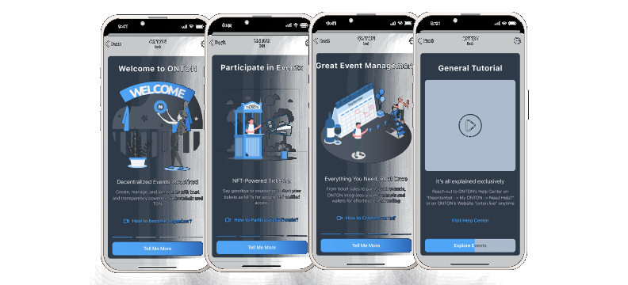
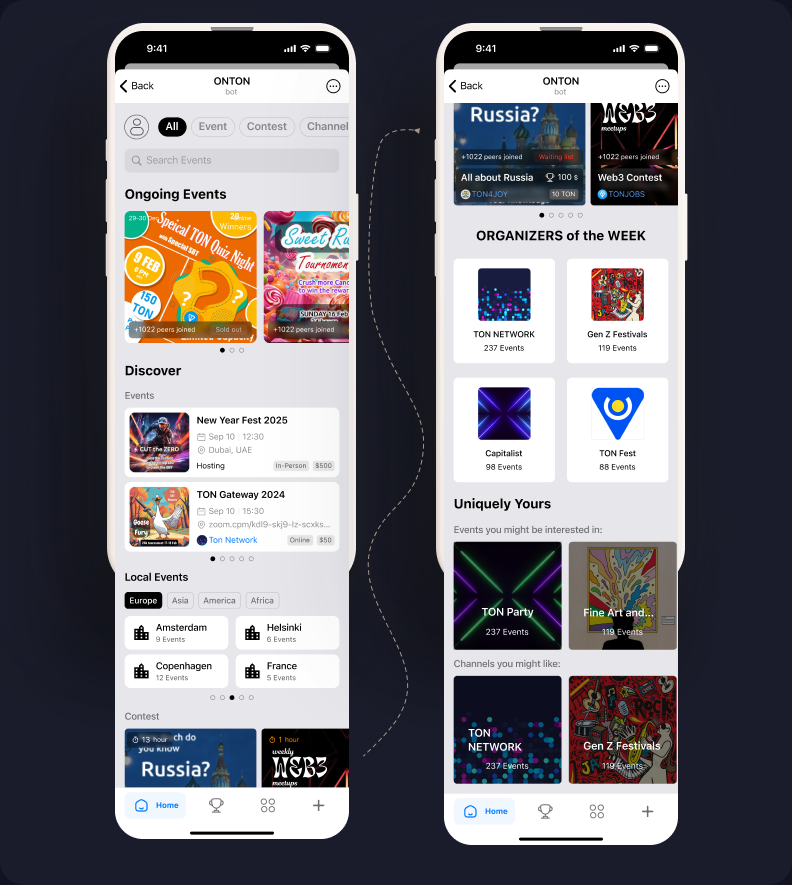
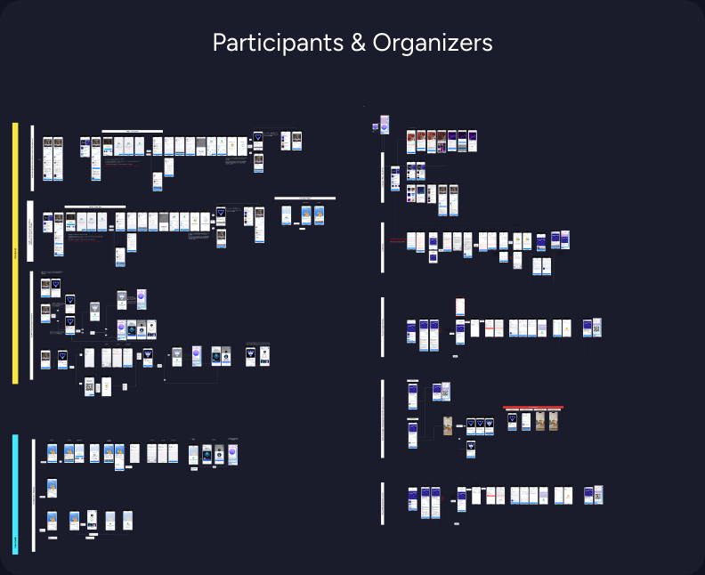
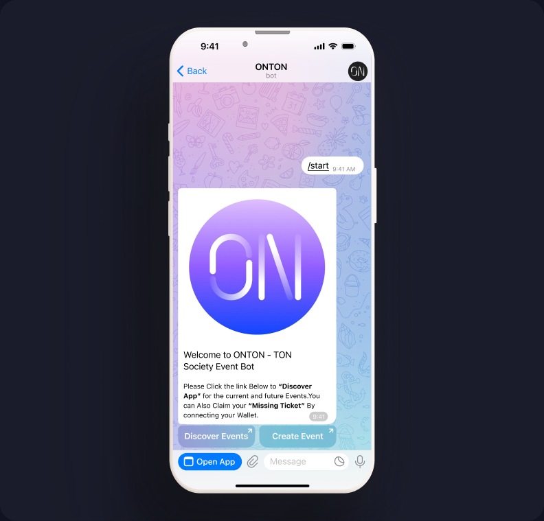
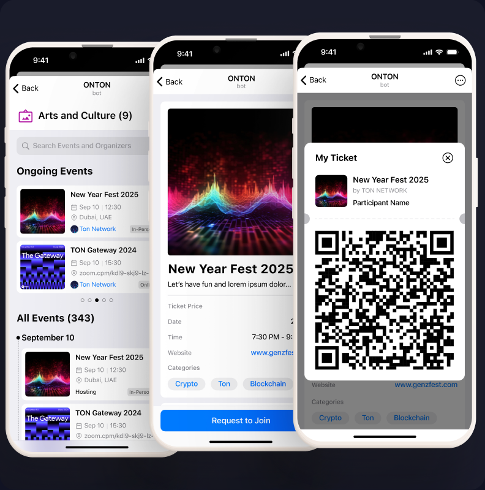
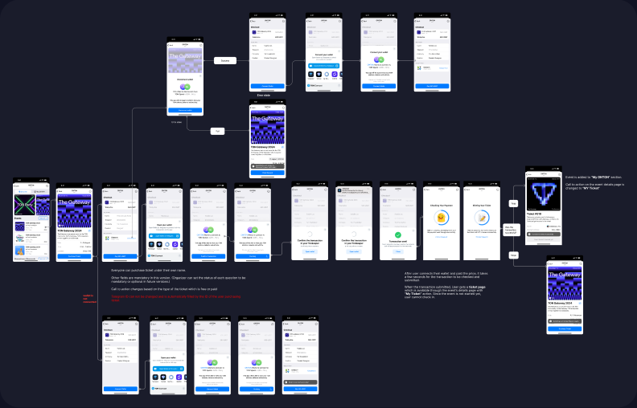
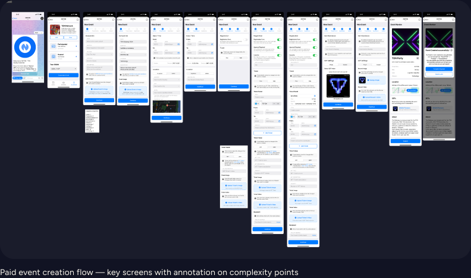

ONTON is a Telegram app connecting crypto communities to on-chain event verification.
Organisers issue proof-of-attendance badges directly in-app; participants collect them as credentials. I joined as the founding product designer before there was a design system, a defined user flow, or a clear picture of who the product was actually for.
The challenge wasn’t one problem, it was a system of interconnected ones. Two distinct user types with opposite mental models. An event creation flow that required technical knowledge most organisers didn’t have. A badge collection experience that felt transactional when it needed to feel rewarding. And an underlying blockchain integration that had to stay completely invisible to users who didn’t care about the technology at all.
Over 13 months I designed the full product from scratch: information architecture, design system, organiser flows, attendee experience, and onboarding for both sides.
I reduced event creation time by 36% through flow restructuring and progressive disclosure. Daily active users grew from 87 to over 1,500 — a 17× increase.
ONTON is no longer active, but it shipped, it scaled, and it proved that Web3 infrastructure can be wrapped in an experience that doesn’t ask users to understand it.
This is the story of how we turned Telegram conversations into verified experiences. In the TON ecosystem, crypto communities organise through Telegram, but verifying identity, distributing event badges, and connecting wallets all happen outside of it. Users bounce between bots, external links, and unfamiliar interfaces just to attend a meetup.
When I joined in May 2024, the product was a legacy Telegram bot serving 87 daily active users. It worked, but barely. The flows weren’t architecturally designed, they had grown organically without a design system, brand identity, or consistent interaction patterns. Users couldn’t easily understand what to do, and the technical infrastructure couldn’t support the features the business needed, especially in-app wallet connection.
The company wanted to pivot from the legacy bot to a Telegram Mini App. I was brought on as the sole designer to lead that transition.

I was the only designer for the full 13 months. Other designers joined briefly, usually for about a month, but rarely got through onboarding before leaving. I maintained roughly 90% of all design output myself.
My responsibilities covered the full scope: I initiated the design system, defined the feature list, sketched wireframes, designed high-fidelity interfaces, and iterated on flows continuously based on analytics and user feedback. I worked directly with the founder (who also acted as product manager), the dev team on technical feasibility, and a distributed marketing team with researchers in Russia, Ukraine, Belarus, Finland, and Bali.
The Token Hunter Problem
The marketing team had investigators embedded in TON community hubs across five countries. They spent time with real community members, observing behaviour, gathering feedback, and reporting insights back to the team.
The most important finding reshaped how I thought about the product: the majority of users weren’t attending events for the events. They were hunting badges and tokens, hoping these proof-of-attendance assets would eventually convert to real cryptocurrency value.

This created a two-sided design problem:
For organizers: How do you verify that attendees actually showed up, without creating an administrative burden?
For participants: How do you make wallet connection and badge claiming feel safe, inside an environment (Telegram) where external links and wallet prompts are associated with scams and “drainers”?
Three principles emerged from the research and guided decisions throughout the project:
1. If it’s not in the chat, it’s not happening. Users live in Telegram. Every flow needed to feel native — no external links, no app switching, no new mental models.
2. Security through familiarity. Wallet connection and verification had to feel like standard system behaviour, not a crypto-specific interaction. Reduce jargon, increase trust.
3. Simplify by default, expand by choice. Not every organiser needs advanced features. The default flow should be fast and general; complexity should be opt-in.
The existing bot had two core flows: organisers could create events, and participants could join them.
Event creation required the organiser to set: name, description, date/time, event type (online/offline), venue location, capacity, category, whether the event required a password for badge claiming, and whether registration needed a form submission with organiser approval.
Participation surfaced this information and let users register. But the interface was a command-line-style bot — no visual hierarchy, no brand consistency, no designed flows. Users typed commands rather than navigating an interface.
The system worked for a small community, but couldn’t scale. There was no infrastructure for in-app wallet connection, no way to expand features without breaking existing flows, and no design language to build on.

1. Design System Aligned with Telegram
To make this Mini App feel native rather than foreign, I built the design system around Telegram’s own visual language — matching its colours, spacing patterns, and general appearance. This was a deliberate constraint: users should feel like they’re still inside Telegram, not visiting an external product.
The exception was the event ticket itself — I used glassmorphic card styling specifically to create a moment of visual distinction. Telegram didn’t offer anything like it, so there were no existing expectations to break. The ticket needed to feel “ownable,” like a collectible rather than a receipt.

2. Wallet Connection as a Native Moment
The biggest trust barrier was wallet connection. In the crypto space, pop-ups asking users to connect wallets are strongly associated with scams. I worked with the dev team to implement TON Connect as a nested flow — the wallet prompt appeared like a native system alert rather than an external redirect. I replaced technical copy like “Sign this message” with “Verify your identity” to lower the psychological barrier.

3. The Password Pivot: From Notification to Confirmation
To combat token hunters seeking bots to claim badges without attending, we introduced a password system. The organiser could set a password, then trigger a push notification during the event — attendees had a two-minute window to enter it and claim their badge.
It failed. Users complained about missing the notification despite being physically present. The time pressure created anxiety rather than security. People felt punished for being in the room but not watching their phone at the right moment.
We pivoted to a simpler model: the password remained active throughout the entire event duration. Attendees could confirm at any point. It was less “secure” in theory, but far more humane in practice — and it eliminated the complaints entirely.
4. Event Creation: Simplifying a Complex Flow
The creation flow carried a lot of options — password, forms, capacity, categories, online/offline toggle, location. For power users running large community events, these were essential. For someone organising a casual meetup, they were overwhelming.
Looking back, one of my clearest regrets is not implementing a progressive disclosure pattern earlier: a simplified default creation flow with advanced features hidden behind toggles (off by default). I eventually understood this, but the insight came later than it should have.

Over 13 months, the product grew from a small legacy bot to a functioning platform:
| Metric | Before | After |
|---|---|---|
| Daily Active Users | 87 | ~1,500 (17× growth) |
| Total User Profiles | — | 30,000+ |
| Event Creation Time | 3 min 34 sec | 2 min 17 sec (36% reduction) |
The 30-second claim for the participant join flow — from chat message to verified ticket — was measured across multiple users after the new ticket interface was implemented.
| KPI | How It’s Measured |
|---|---|
| Task Completion Time | Time taken for each step and total event creation time. |
| Task Success Rate | % of users who complete each task without assistance. |
| Error Rate | # of misclicks, form submission errors, or moments of confusion. |
| User Satisfaction | Post-task ratings (1–5 scale) and qualitative feedback. |
| Cognitive Load | Observed hesitation, pauses, and confidence levels (e.g., “Where do I click next?”). |
| Feature Discovery Rate | % of users who successfully find and use key features like “Spin to Win,” NFT gating, or templates. |
| NPS-style Recommendation | “Would you recommend this tool to others to create events?” (scale 0–10). |
I want to be transparent: the business was on a downward trajectory, and shortly after I exited, the project failed. The service is no longer available, though the website, campaign tokens, and code repository still exist.
This doesn’t diminish the design work. The product shipped, served real users, and grew significantly during its lifespan. But it’s a reminder that good design doesn’t guarantee business survival — and I think it’s important to say that honestly.
The Telegram-native design system was the right call. By constraining the visual language to match Telegram’s patterns, we removed the “this feels foreign” friction that kills adoption in Mini Apps. The glassmorphic ticket was a calculated exception — differentiation in the one place where users wanted to feel ownership.
The password pivot is the interaction decision I’m most confident about. Choosing usability over theoretical security — and responding to real complaints rather than defending the original design — was the right instinct.
I’d implement progressive disclosure in event creation much earlier. The toggle-based approach (simple by default, complex by choice) would have made the platform more accessible to casual organisers from day one rather than serving only power users.
I’d also invest more in simplifying the attendance flow without compromising badge security. The tension between making it easy for real attendees and hard for bots is a design problem I didn’t fully resolve.
Thirteen months as a solo designer under constant time pressure — shipping features, iterating on feedback, maintaining consistency across a growing product — taught me that I can design functional, intuitive interfaces fast. But more importantly, it taught me to stay grounded in user evidence even when the pace feels impossible. The features that worked best were always the ones informed by real feedback from the field researchers, not the ones we assumed would work.